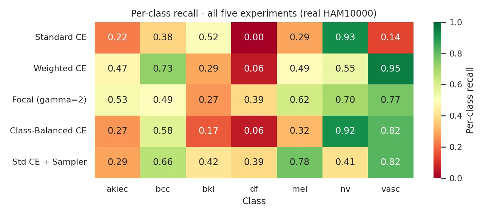

Loss functions and sampling for imbalanced skin-lesion classification
A controlled comparison of cross-entropy, weighted CE, focal loss, class-balanced CE and re-sampling on HAM10000, read through metrics that a clinical task needs.

Overview
On the HAM10000 dermoscopic dataset the majority class, melanocytic nevi, is 67 % of the data and dermatofibroma only 1.1 %. A model trained naively with cross-entropy reaches high accuracy by mostly predicting the majority class, and misses exactly the rare classes that matter clinically.
This study holds the CNN, optimiser, split and seed fixed and changes only the loss function or the sampling strategy. It then reports macro-F1, balanced accuracy and per-class recall instead of accuracy alone.
The configuration with the best accuracy (standard CE, 73.6 %) has the worst balanced accuracy and never detects dermatofibroma. Focal loss gives the best macro-F1; re-sampling buys the highest melanoma recall at the cost of over-predicting minority classes.
What I built
- A 106 391-parameter CNN trained from scratch on a stratified 70/15/15 split.
- Five configurations: CE, inverse-frequency weighted CE, focal loss (γ = 2), class-balanced CE (effective number of samples) and a balanced random sampler.
- Confusion matrices, per-class recall heat maps, error analysis and an annotated over-fitting study; report, slides and two interactive HTML briefs.
Results
| Configuration | Macro-F1 | Balanced acc. | Accuracy | Recall mel | Recall df |
|---|---|---|---|---|---|
| Standard CE | 0.381 | 0.352 | 0.736 | 0.29 | 0.00 |
| Weighted CE | 0.341 | 0.505 | 0.521 | 0.49 | 0.06 |
| Focal loss (γ = 2) | 0.443 | 0.538 | 0.622 | 0.62 | 0.39 |
| Class-balanced CE | 0.395 | 0.447 | 0.718 | 0.32 | 0.06 |
| CE + balanced sampler | 0.391 | 0.537 | 0.464 | 0.78 | 0.39 |
Held-out test set of 1 503 images.
Figures
Run it
$ pip install -r requirements.txt $ jupyter notebook notebook/MYZ309E_HAM10000_Project.ipynb $ python src/train_real.py "Focal (gamma=2)" 8